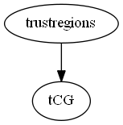

Master index
Index for manopt\solvers\trustregions
Dependency Graph for manopt\solvers\trustregions

Generated on Tue 12-Aug-2014 11:52:34 by
m2html
© 2005
 Master index
Master index Master index
Master index